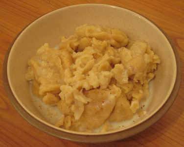

Au Portinfé,
Jeudi-au-sé.
Moussieu l'Editeu,
"Tu n'as pas oublié, Ph'lip," s'fit la Merrienne, hier au sé, "que la s'maine tchi veint est la S'maine Sainte?"
"Nan, damme," j'l'y dit. "J'ai tachi d'l'oublié, mais n'ya pas yeu moyen."
"Et pourtchi que tu'éthais voulu l'oublié, bouonhomme?"
"Parsque," j'l'y dit, "ch'est tréjous pour nous une sémaine de calamité. R'garde chein tchi s'arrivit l'année passée. Une blianche gélée dans la s'maine tchi râflit ma bordeuse tch'avait pathu si bein, et, avec chonna une avârie dans l'clios quand ma g'niche de yun des boeux du Homestead se rompit une gambe en tâchant d'sauté par dessûs l'fôssé pour allé mangi les bricolis à notre vaisin."
"Vèthe, ch'est vrai assez," ou dit, "et mé j'eut mes malheurs étout, car sans y pensé j'mint du chucre dans la soupe le Vendredi Saint."
"Pus qu'chonna," j'l'y dit, "quand j'entrit à douze heuthes pour man dîné, tu'avais brûlé les fiottes et je n'put pas en avalé qu'un gobin."
"Je n'me trouvais pas trop bein chu jour-là," ou dit, "et pourtant, ayant tait au sérvice j'n'éthais pas deu faithe chais mêprinses-là."
"Tu n'les éthais pas faite," j'l'y dit, "si tu'avais résté ichin faithe tan travas comme-y-faut. Enfin, chonna est pâssé, et chein tchi m'gène ch'est tchi minsèthes que j'éthons à subi ch't'année. J'ai tait vais mes patates une demié-doûzaine de fais agniet, et y m'a semblié châque fais qu'au lieu d'avanchi ils avaient empliéthi."
"Ch'est les vents d'Est," ou dit. "Drôle assez, mais ch'est tréjous d'même dans la S'maine Sainte. Y faut éspethé que y'étha un changement chutte fais."
"J'ai vêtchu en éspethance toute ma vie," j'l'y dit, "et ach'teu, dans mes viers jours j'voudrais l'faithe, mais j'n'ai pas grand' confiance que la Providence chang'gea d'idée. Chein tchi nos faut au moment ch'est une bouonne niet d'plyie, des vents du Sud-Ouest, épis tout-plien d'solé, mais pûs qu'probablye che s'sa l'contraithe."

"Y n'faut pas dithe ditet," ou s'fit, "car quand nou prédit l'malheur il est prèsque seux de v'nin. A qu'menchi, man Ph'lip, j'te prométs que quand veindra l'Vendredi, y'étha du sé dans ta soupe, et les fiottes ne s'sont pas brûlées."
"Tréjous tchiquechose," j'l'y dit, "mais ach'teu, Merrienne, as-tu veu tchèsque l's'Etats ont fait agniet?"
"Y'en a tchiques lignes dans la gâzétte," ou raiponnit. "Y pathait que l'John Le Mérquand a pèrdu pour la deuxième fais, mais pas par une si grande mâjorité. Crais-tu tch'il est dêcouothagi?"
"Grand doux nanin," j'l'y dit. "Un Mérquand n'se dêcourage pas d'même. Sans doute le John est un mio d's'appointé, mais au mains y s'est mint du bouon bord avec les Catholiques, et sans doute y veindront à s'n'aide l'année tchi veint."
"Et tchèsqu'à, y'a l'année tchi veint?" ou voulit savé.
"Y'a l's'êlections partout l'île, pour les Députés," j'l'y dit. "Dans la campagne y n'y'éthait p'têtre pas hardi d'changements, sinon p't'être ichin à Saint-Ou."
"Mais," ou s'fit, "le Mâjeur n'a pas dit tch'il en étha yeu asséz, et ch'n'est pas probablye tch'y s'sa oppôsé."
"Arrête jusqu'à l'année tchi veint," j'l'y dit, "et tu vêrras. Mais ach'teu, en Ville, y'a trais Districts, et l'John Le Mérquand est Député pour le numétho yun. a la dérnièthe êléction y n'y'avait pas d'oppôsition, mais ch'est seux et cértain que chutte fais ch'ne s'sa pas d'même, et pérsonne ne sait chonna mûs qu'notre John. Il étha à travaillyi, mais avec chonna, je n'crais pas tch'il a hardi à craindre. Dans les deux autres Districts y'a tréjous pûs d'candidats que d'vacances, et dans l'numétho trais le Sieur Venables y'est tréjous v'nu sans autchune diffitchulté. Ach'teu tch'y veint d'supporté les Catholiques, ch'est probablye tch'il étha pûs d'vouaix que jamais. Il est comme le John Le Mérquand, en ayant une bouonne tête sûs ses êpaules, et pourtant dans les pâraisses de Campagne y ne f'thait rain."
"J'pense bein," ou s'fit, "que la clâsse ouvrièthe étha des candidats, et que l'Sieur Le Bro, le Communiste, r'êprouvtha. Y n'fit pas tant pièthe en chinquante-sept, épis y'a-t'y pon un Sieur Faramus?"
"Pas ach'teu," j'l'y dit, "car y pathait tch'il a fait banqueroute. Quand à la clâsse ouvrièthe je n'vais pas lûs candidats dans la Chambre pour tchique temps à v'nîn. Y faudra tch'il arrêtent pour une louai tchi paietha un membre d's'Etats tant par an, et je n'vais pas chonna v'nin pour bein d's'années."
"Et l'Mont Orgueil," ou d'mandit, "s'en vont-y dêpensé touos chais sous pour l'illuminé en couleur?"
"Ch'n'est pas décidé," j'l'y dit, "mais au moment j'dithais nânin."
Ph'lip
21/3/1959
Viyiz étout: